OZZY OSBOURNE
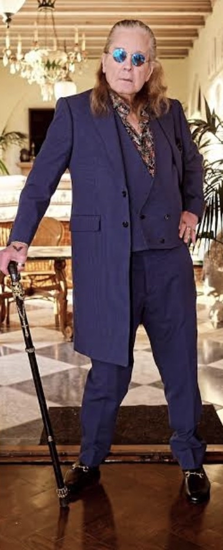
Subject ProfileFull name, origin, and distinguishing marks of the subject.
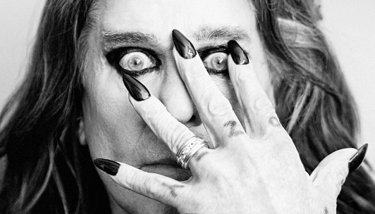
Osbourne, John Michael
Known professionally as Ozzy Osbourne. The Prince of Darkness. The Godfather of Metal.
- Born
- 03 December 1948 — Aston, Birmingham, England
- Died
- 22 July 2025 — aged 76, at home, surrounded by family
- Origin
- Fourth of six children; father Jack (toolmaker), mother Lilian (Lucas factory)
- Known Aliases
- "Ozzy" (school nickname), "The Prince of Darkness", "The Godfather of Metal", "The Madman"
- Affiliations
- Black Sabbath (1968–1979, 1997–2017, 2025); Solo career (1979–2023)
- Known For
- Inventing heavy metal. Surviving himself. Showing up, every time, as exactly who he was.
- Distinguishing Marks
- Dyslexia (childhood); left-handed cross tattoos on knuckles; smile that didn't match the stage persona.
- Final Dx
- PRKN2 (Parkin) — a rare genetic form of Parkinson’s disease, diagnosed February 2019, disclosed January 2020.
Timeline of EventsEvidence pinned in chronological order. 1948–2025.
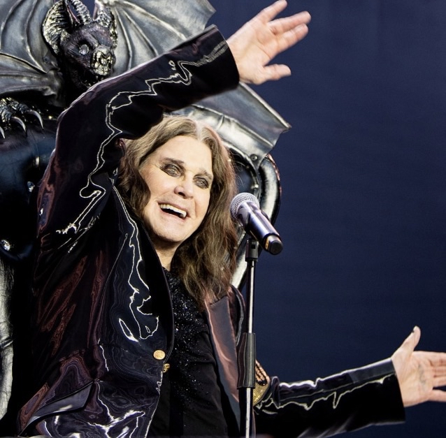
John Michael Osbourne born in Aston, Birmingham — fourth of six in a working-class house. Father a toolmaker, mother at the Lucas factory.
Age 14. Hears The Beatles on the radio. Decides, in one song, that this is the work.
Convicted of burglary at 17. Serves six weeks at Winson Green Prison after his father refuses to pay the fine.
Osbourne, Tony Iommi, Geezer Butler and Bill Ward come together in Birmingham. The band is briefly called Polka Tulk, then Earth.
Renamed in August. First gig under the new name on 30 August 1969, in Workington. Heavy metal has a pulse.
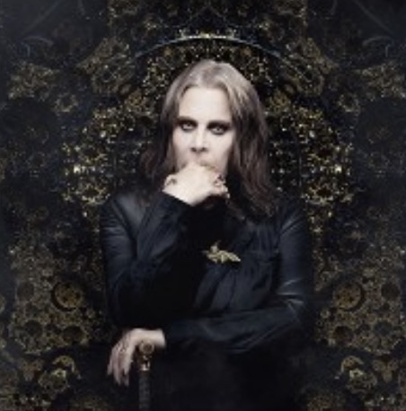
Debut LP Black Sabbath drops Friday 13 February. Paranoid lands in September and hits UK No. 1. A genre is invented in twelve months.
Three albums in three years. Each one heavier than the last. The doom-laden sound is fully encoded.
Last studio album with the original lineup until 2013. Van Halen opens. Internal tensions climbing.
April 27, 1979: Black Sabbath fires Ozzy for chronic substance abuse. Sharon Arden takes over management within months. A new band forms around a young classical-guitar prodigy.
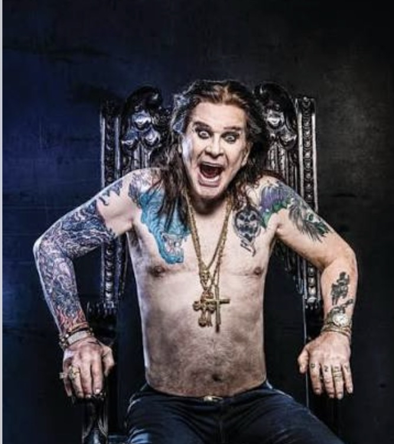
Solo debut. With Randy Rhoads on guitar. "Crazy Train," "Mr. Crowley." Eventually 4× platinum. The comeback no one predicted.
Second solo LP. "Over the Mountain," "Flying High Again." The classical phrasing of Rhoads rewrites what a metal lead could do.
Small Beechcraft crash at Flying Baron Estates. Rhoads, age 25, pilot Andrew Aycock, and seamstress Rachel Youngblood all lost. Ozzy was asleep on the tour bus. He would carry it for the rest of his life.
July 4, 1982: marries Sharon Arden in Maui. The partnership that would save his life begins. Forty-three years.
Aimee born 1983. Kelly born 27 October 1984. Jack born 8 November 1985. A family is formed in the middle of the storm.
Original Sabbath lineup briefly reunites at JFK Stadium, 13 July 1985. First reunion since 1978.
No Rest For The Wicked introduces the guitarist who would become the defining sideman of the rest of the career.
"Mama, I'm Coming Home." "No More Tears." Certified 4× platinum in the US. The commercial peak of the solo run.
After Lollapalooza turns him down, Sharon builds a festival of their own. Inaugural dates 25–26 October 1996. Metal gets a home for the next two decades.
All four original members reconvene at the Birmingham NEC. The Reunion album follows in October 1998 and wins a Grammy for "Iron Man" in 2000.
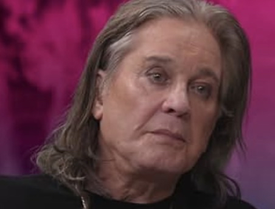
MTV's The Osbournes premieres 5 March 2002. Most-watched series in network history; wins the Primetime Emmy for Outstanding Reality Program. In June, he performs "Paranoid" at Buckingham Palace for the Queen's Golden Jubilee.
Duet with Kelly hits UK No. 1 in December — 33 years after "Paranoid." Then: a near-fatal ATV accident at his Buckinghamshire estate, December 8. Broken collarbone, eight ribs, punctured lung. Eight-day coma. Survived.
Black Sabbath inducted 13 March 2006. Later that year, a plaque on Birmingham's Walk of Stars.
Sabbath's first studio album with Ozzy since 1978 debuts at No. 1 in the UK, US, and beyond. The outsider band becomes the establishment.
February 4, 2017: Black Sabbath play their final concert at Genting Arena, Birmingham. Home city, last bow.
Reveals on Good Morning America, 21 January 2020, that he was diagnosed in February 2019 with PRKN2, a rare genetic form of Parkinson's. Ordinary Man drops the following month: "this album saved my life."
August 30, 2022: performs "Paranoid" and "Iron Man" with Tony Iommi at the closing ceremony of the Commonwealth Games — in Birmingham. Home city, again.
October 19, 2024: inducted into the Rock & Roll Hall of Fame as a solo artist. Second induction. Jack Black gives the speech.
The final concert. Original Sabbath lineup reunited for the first time since 2005. 40,000 at Villa Park, 5.8M on the livestream. Tom Morello as musical director. Metallica, Slayer, Guns N' Roses, Pantera, Tool, Alice in Chains, Halestorm, Gojira, Lamb of God on the bill. Ozzy sings five solo songs from a bat-and-skull throne, then the four brothers close with War Pigs / N.I.B. / Iron Man / Paranoid.
Seventeen days after Villa Park. Ozzy Osbourne dies at home, surrounded by family. He was 76. July 30: public procession through Birmingham, Bostin' Brass playing Sabbath classics along Broad Street, flowers stacked at the Black Sabbath Bridge.
Known AssociatesPublic record only. Family privacy respected.
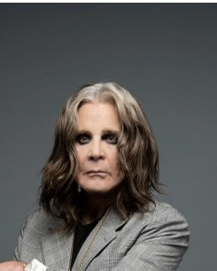
Randy Rhoads
Guitarist · Solo Band · 1979–1982Classically trained, Santa Monica-born, recruited at 22 from Quiet Riot. Co-wrote and played on Blizzard of Ozz (1980) and Diary of a Madman (1981). Pulled Ozzy out of a post-Sabbath tailspin. Died 19 March 1982, age 25, in a small-plane crash in Leesburg, FL. Ozzy, 2024: "If I hadn't have met Randy Rhoads, I don't think I'd be sitting here now."
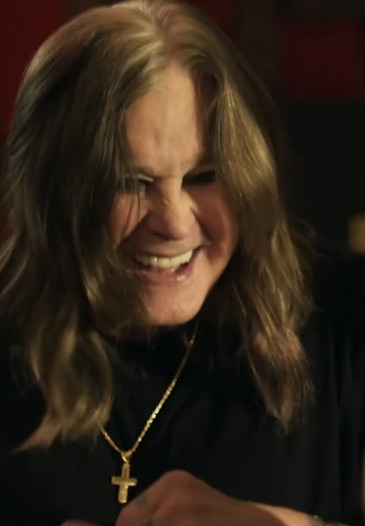
Sharon Osbourne
Manager · Wife · Partner · 1979–2025Took over management in 1979 as Ozzy was at his lowest. Married Maui, 4 July 1982. Founded Ozzfest 1996. Colon cancer 2002, preventive double mastectomy 2012, both disclosed publicly to help other women. Ozzy: "I owe my life to Sharon."
Aimee Osbourne
Eldest Daughter · Musician (ARO)Born 2 September 1983. Chose privacy — moved out at 16 rather than appear on The Osbournes. Records dark synth-pop as ARO; debut LP Vacare Adamaré (2020). Has spoken publicly only when she's chosen to.
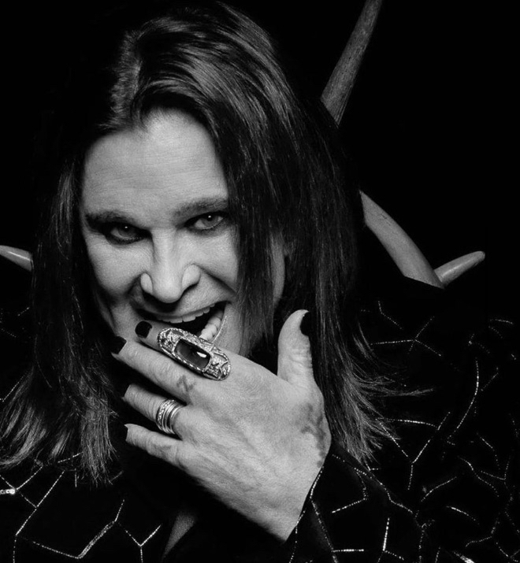
Kelly Osbourne
Middle Daughter · TV Host · MusicianBorn 27 October 1984. "Changes" duet with Dad hits UK No. 1 in 2003. Two solo LPs. Co-hosted Fashion Police with Joan Rivers 2010–15. Third place on Dancing with the Stars Season 9. Open about sobriety and mental health.
Jack Osbourne
Son · Producer · MS AdvocateBorn 8 November 1985. Co-starred with Dad on Ozzy & Jack's World Detour (2016–2018), one of the warmest projects of Ozzy's late career. Diagnosed with relapsing-remitting MS in 2012, age 26 — went public immediately to reduce stigma.
Iommi · Butler · Ward
Black Sabbath · 1968–1979, 1997–2017, 2025Tony Iommi (guitar), Geezer Butler (bass), Bill Ward (drums). The other three-quarters of the band that invented metal. Reunited with Ozzy for the final time at Villa Park on 5 July 2025. Iommi's statement after Ozzy's death: "We’ve lost our brother." Geezer's tribute essay ran in Deadline the following week.
Critic TestimonialsThree registers of the record. Academic · Major Press · Fan Community.
Black Sabbath "took the emphasis on the occult even further, using dissonance, heavy riffs, and the mysterious whine of vocalist Ozzy Osbourne to evoke overtones of gothic horror." — Robert Walser, Running with the Devil: Power, Gender, and Madness in Heavy Metal Music (Wesleyan University Press, 1993). weslpress.org
Black Sabbath were "pioneers" of a scene that forged an "intense, exclusionary, strongly masculine subculture." Fears of the music, she argued, "stem from a deep misunderstanding" of its cathartic function. — Deena Weinstein, Heavy Metal: The Music and Its Culture, rev. ed. (Da Capo Press, 2000 / orig. Lexington Books, 1991). via Google Books
Andrew L. Cope's case, built on Peter Webb's "musical milieu," repositions Led Zeppelin as a defining hard rock band and proposes that Black Sabbath "was in fact the first band to display various codes that would become the foundation of the heavy metal scene." Birmingham's geography — working-class, industrial, between London and Liverpool — made the sound possible. — Andrew L. Cope, Black Sabbath and the Rise of Heavy Metal Music (Ashgate/Routledge, 2010). routledge.com
"The industrial geography and working-class environment of post-war Birmingham directly influenced the lyrics and sound of Black Sabbath's and Judas Priest's music, which in turn became a new form of music later known as heavy metal." — Leigh Michael Harrison, "Factory Music," Journal of Social History 44(1), Fall 2010. academic.oup.com
"Ozzy Osbourne is fundamental to everything that happened in rock music after Black Sabbath. There's no metal, there's no hardcore, there's no punk without Sabbath." On the reality-TV pivot: "The show really humanized him and made him a prototype for the celebrity redemption story." — Michael Johnson, Assistant Professor of Music Studies, Temple / Boyer College of Music & Dance, 2025. boyer.temple.edu
Ozzy Osbourne, Black Sabbath Singer and Heavy Metal Pioneer, Dead at 76
Frames Ozzy as both the frontman who "virtually invented heavy metal" and "a reality-TV pioneer" in his second act. Between Sabbath and solo, Ozzy was the single most-represented artist on Rolling Stone's 100 Greatest Metal Albums of All Time — Paranoid at No. 1, Sabbath's debut at No. 5, Blizzard of Ozz at No. 9.
rollingstone.comThe people's Prince of Darkness took heavy metal into the light
Petridis's thesis: Ozzy smuggled doom-metal imagery into the mainstream without ever being truly menacing — the cartoonish Prince of Darkness whose public warmth ultimately made heavy metal palatable to a mass audience.
theguardian.comOzzy Osbourne Gives Earth-Shaking Farewell at Black Sabbath's Back to the Beginning
Ozzy, unable to walk, sang from a bat-and-skull throne and "writhed and wriggled like a man summoning every last inch of the hell-raising spirit still in him." From the stage: "Let the madness begin!" And later, tearful: "It's so good to be on this fucking stage you have no idea."
rollingstone.comThis album saved my life
The Parkinson's disclosure piece. Ozzy: "This album is quite possibly one of the most important albums I've ever made because it saved my life." On his wife: "I'm lucky to have a friend in the world, never mind a wife." On his art: "I always write my best songs about death."
nme.comAll-star farewell to the gods of metal is epic and emotional
Calls Sabbath's closing four-song set "the farewell this extraordinary band deserved," with Bill Ward adding "the swing other Sabbath drummers had never managed," Iommi "churning out his monstrous riffs," and Ozzy himself "a baffled and discomfited force of nature" singing from his throne.
theguardian.com'It's not until Ozzy's actually there, thanking fans and getting tearful, that it sinks in.'
The metal press's farewell of record. Describes Villa Park as "amongst the biggest and most important metal gigs of all time." Ozzy to the crowd: "You've got no fucking idea what this means to me." Opened and closed with rain and tolling bells — a callback to the 1970 Sabbath debut.
loudersound.com"Ozzy never lied to us. Time after time, through every media frenzy, he told us the truth. The outsider, the fuck-up, the idiot, the fool — Ozzy embodied them all."
— Paul Flannery, Running Probably (Substack tribute). paulflannery.substack.com"Ozzy's legacy is a complicated one, given that, depending on when you were born, you may have one of three or four or five different conceptions of who he is as an artist and pop-cultural figure."
— Hank Shteamer, Dark Forces Swing (Substack, RIP essay). darkforcesswing.substack.com"'Paranoid' during Long COVID. 'War Pigs' reshaping my politics. 'Changes' shared with my stepson as a lesson that music transcends color. 'Diary of a Madman' reframed from demonic to mental-illness metaphor. At #1 for me: 'I Don't Know' — for its embrace of intellectual humility."
— Tomas Maldonado, "10 Ozzy Songs That Got Me Through Life," The Discourse Zone. thediscoursezone.substack.com"70,000 people started balling during 'Mama, I'm Coming Home.' He was right there on that throne and you could feel it. We got to tell him, in person, one time. Seventeen days later he was gone."
— Fan community consensus from Villa Park, 5 July 2025, consolidated across Consequence, MetalSucks, Rock Cellar. consequence.net"The Heavy Metal Citadel writer never got to see him live — but watched Villa Park on the stream. 'No More Tears' still gives me chills. Randy Rhoads pulled Ozzy out of the alcoholism spiral and Ozzy spent the rest of his life paying it back. Grief, balanced against gratitude."
— The Heavy Metal Citadel, "A Personal Tribute to the Prince of Darkness." heavymetalcitadel.com"Rolling Stone's list put Paranoid at No. 1, Sabbath's debut at No. 5, Blizzard at No. 9. On Ultimate Guitar we argue about Randy vs. Zakk vs. Jake until the sun comes up — and that's the point. He left enough guitar chairs full of greatness to fight about forever."
— Cross-community consensus (Ultimate Classic Rock, Ultimate Guitar, r/Metal, Steve Hoffman Forums). ultimateclassicrock.com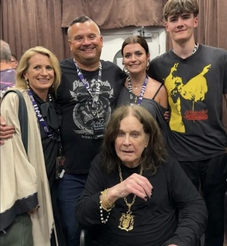
Final Report — Case Closing Statement
The evidence, gathered across seventy-six years, is conclusive. A boy from Aston — dyslexic, bullied, briefly locked up at seventeen — heard "She Loves You" on the radio at fourteen and decided the work was music. Nine years later, on Friday the thirteenth of February 1970, he and three other kids from Birmingham released an album that invented a genre. The critics of the day called it the worst of the counterculture. The kids who bought it knew better. Fifty-five years later, the academy, the press, and the fans have all agreed: the kids were right.
What the file shows, beyond the records and the hall-of-fame plaques and the Grammys and the Emmys and the two Rock & Roll Hall of Fame inductions, is a man who told on himself. Who was fired and came back. Who lost Randy Rhoads on a clear Florida morning in 1982 and carried that loss, out loud, in interviews, for forty-three more years. Who went into a reality-TV experiment in 2002 and came out — improbably — as the most-loved dad in America. Who was diagnosed in February 2019 and spent eighteen months wrestling with it privately before telling the truth on Good Morning America. Who, on a warm July night in 2025, sat on a throne shaped like a bat and skull at Villa Park, in his home city, and looked out at forty thousand people and said, through tears: "It's so good to be on this fucking stage you have no idea."
He made it seventeen more days. He died at home. He was surrounded by love. The city of Birmingham closed off Broad Street and walked him home with a brass band playing his songs.
This file concludes, with deference to every witness on the record — from Walser and Weinstein and Cope in the academy, to Petridis and Grow and Perry in the press, to the Substack writers and Metal Archives faithful and the kid who cried during "Mama, I'm Coming Home" on the livestream — that the subject was not a menace. The subject was a gift. He did the work, and he did not lie, and on the way out he thanked everyone who listened.
The Prince of Darkness walks us into the light. File closes with honor.
THE PEOPLE WHO HEARD IT FIRST · 2025
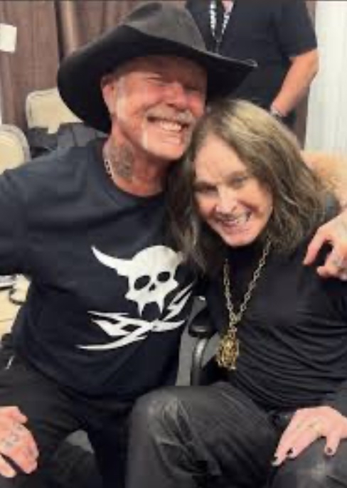